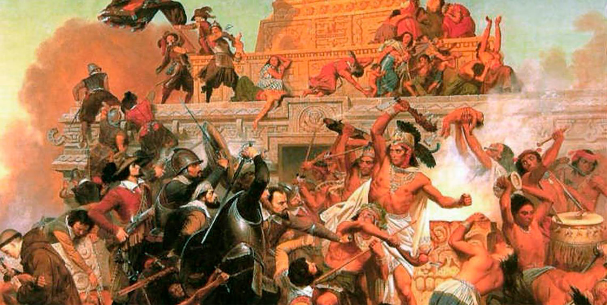
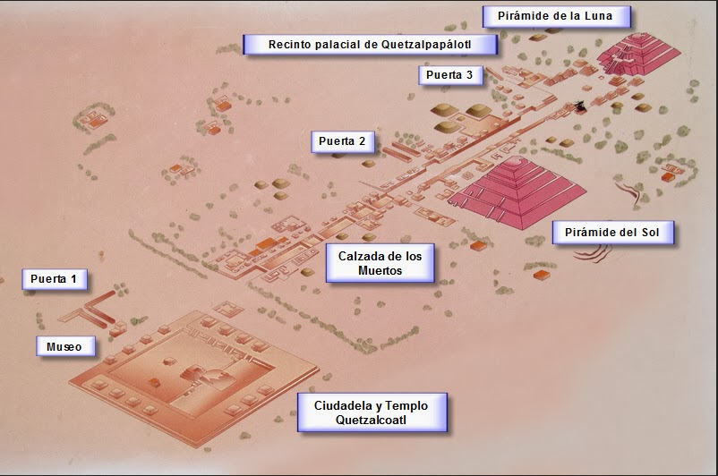
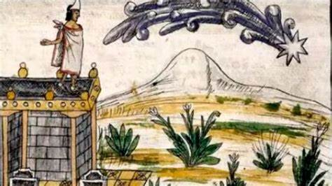

Misterio Decadencia
Teotihuacán fue una de las civilizaciones más poderosas y enigmáticas de Mesoamérica. Durante varios siglos, esta ciudad fue el centro urbano más grande del continente americano, pero alrededor del siglo VII d.C., colapsó de forma repentina y aún no se conoce con certeza la causa exacta de su decadencia.
El misterio que rodea su caída ha intrigado a arqueólogos e historiadores durante generaciones. A continuación, se expone una visión completa de las teorías, evidencias y factores que explican, en parte, su desaparición.
Apogeo antes de la caída
Antes de su colapso, Teotihuacán vivía un periodo de gran esplendor. Entre los siglos III y VI d.C., albergaba a más de 100,000 habitantes, con una planificación urbana avanzada, arquitectura monumental, complejos religiosos, comercio a larga distancia y una estructura social compleja. Su influencia llegaba a regiones tan lejanas como el área maya, Oaxaca y la costa del Golfo.
A pesar de su grandeza, hacia el siglo VII comenzó un proceso de decadencia interna, reflejado en cambios en la arquitectura, reducción del comercio, abandono de barrios y signos de conflictos.
Evidencia de destrucción interna
Uno de los aspectos más enigmáticos es que la caída de Teotihuacán no parece haber sido causada por una invasión externa. Las investigaciones arqueológicas han encontrado evidencias de incendios, saqueos y destrucción en edificios clave, como en el Templo de Quetzalcóatl, la Ciudadela y otras construcciones gubernamentales y religiosas.
Este patrón sugiere una revuelta interna, probablemente protagonizada por sectores descontentos de la sociedad. Algunos edificios residenciales y talleres artesanales no fueron atacados, lo que indica que la violencia fue dirigida hacia los centros de poder y élite religiosa.
  
Posibles causas del colapso
Los estudios señalan varias causas probables y combinadas que llevaron al colapso de Teotihuacán. Aunque ninguna ha sido confirmada como definitiva, todas aportan piezas del rompecabezas:
- Conflictos internos y descontento social: El poder religioso y político estaba concentrado en la élite teocrática. Las tensiones sociales pudieron derivar en rebeliones contra las autoridades. La destrucción selectiva de templos y palacios indica que hubo una ruptura con el sistema dominante.
- Problemas ambientales: Hay indicios de sequías prolongadas, cambios climáticos o degradación del suelo agrícola por sobreexplotación. Estos factores habrían generado crisis alimentarias, migraciones y debilitamiento del orden social.
- Colapso económico y comercial: Teotihuacán dependía del comercio regional para mantener su prosperidad. Con el tiempo, las rutas comerciales se fragmentaron o se desplazaron hacia otras ciudades emergentes, como Monte Albán o las ciudades mayas, reduciendo su poder económico.
- Presión externa o conflictos regionales: Aunque no hay pruebas claras de una invasión directa, sí existen evidencias de choques con otras culturas. Algunos registros mayas describen posibles conflictos con Teotihuacán o contra sus aliados en el sureste mesoamericano.
Abandono paulatino y cambio cultural
Después del colapso, Teotihuacán no fue completamente abandonada de inmediato, pero sí perdió su papel dominante. Algunas áreas continuaron habitadas por grupos más pequeños, y los espacios religiosos dejaron de tener el mismo uso ceremonial.
Los edificios dejaron de mantenerse, los murales se cubrieron con capas de tierra o se deterioraron, y el comercio ya no giraba en torno a la ciudad. Los barrios étnicos también desaparecieron, y muchas estructuras fueron desmanteladas o reutilizadas por nuevos habitantes.
El misterio del anonimato Otro aspecto misterioso de Teotihuacán es que no se conoce el nombre real de la ciudad ni el de sus fundadores. Tampoco hay textos que narren su historia o sus gobernantes. Esto ha alimentado muchas teorías, desde contactos con otras civilizaciones hasta interpretaciones míticas y esotéricas. El nombre "Teotihuacán" fue dado por los mexicas siglos después, y significa "Lugar donde nacen los dioses". Para ellos, era un sitio sagrado y ancestral, al punto de creer que ahí se había creado el Sol y la Luna.
Impacto posterior y legado
Aunque la civilización de Teotihuacán colapsó, su legado trascendió durante siglos. Las culturas posteriores, como los toltecas y mexicas (aztecas), retomaron elementos artísticos, religiosos y arquitectónicos de Teotihuacán. Deidades como Quetzalcóatl y Tlaloc fueron adoptadas en sus panteones.
Además, el modelo de ciudad con eje ceremonial, calzadas y pirámides influyó en otras urbes mesoamericanas. Su arte, su forma de construir y su cosmología se mantuvieron como parte del tejido cultural de Mesoamérica.
El misterio de Teotihuacán no solo radica en su origen, sino también en su dramática desaparición. La ciudad, una de las más avanzadas del mundo antiguo, cayó no por enemigos externos, sino probablemente por una combinación de crisis internas, sociales, ambientales y económicas. Su historia es una advertencia sobre el desequilibrio entre poder, ambiente y cohesión social.
A pesar de su decadencia, el legado de Teotihuacán sigue vivo. Las ruinas, los murales, las pirámides y las máscaras continúan hablándonos de una civilización que, aunque envuelta en el misterio, dejó una huella imborrable en la historia de México y del mundo.